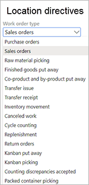

Arbeiten mit Lagerplatzrichtlinien
Important
Dynamics 365 for Finance and Operations hat sich zu speziell entwickelten Anwendungen entwickelt, mit denen Sie bestimmte Geschäftsfunktionen verwalten können. Weitere Informationen zu diesen Änderungen finden Sie im Dynamics 365-Lizenzierungshandbuch.
Lagerplatzrichtlinien sind Regeln, die dabei helfen, Entnahme- und Einlagerungslagerorte für die Lagerumlagerung zu identifizieren. In einer Auftragsbuchung bestimmt eine Lagerplatzrichtlinie z. B., wo die Artikel entnommen und wo die entnommenen Artikel eingelagert werden. Lagerplatzrichtlinien bestehen aus einer Kopfzeile und zugehörigen Zeilen. Sie werden für bestimmte Arbeitsauftragsarten erstellt.
Note
Dieses Thema gilt für Funktionen im Modul Lagerortverwaltung. Es gilt nicht für Funktionen im Modul Bestandsverwaltung.
Sie können mit Lagerplatzrichtlinien folgende Aufgaben durchführen:
- Einlagern eingehender Artikel
- Entnahme und Phaseneinteilung für Artikel für ausgehende Buchungen
- Entnahme und Einlagerung von Rohmaterial für die Produktion
- Auffüllen von Lagerplätzen
Voraussetzungen
Bevor Sie eine Standortanweisung erstellen können, müssen Sie diese Schritte ausführen, um sicherzustellen, dass die Voraussetzungen erfüllt sind.
- Stellen Sie sicher, dass der erforderliche Lizenzschlüssel eingeschaltet ist. Gehen Sie zu Systemverwaltung > Einrichten > Lizenzkonfiguration, erweitern Sie den Lizenzschlüssel Handel und wählen Sie dann den Konfigurationsschlüssel Lagerort- und Transportverwaltung. Beachten Sie, dass für diesen Schritt Admin-Zugriff erforderlich ist.
- Wechseln Sie zu Lagerortverwaltung > Einstellungen > Lagerort > Lagerorte.
- Erstellen Sie einen Lagerort.
- Setzen Sie auf dem Inforegister Lagerort die Option Lagerortverwaltungsprozesse verwenden auf Ja.
- Erstellen Sie Lagerplätze, Lagerplatztypen, Lagerplatzprofile und Lagerplatzformate. Weitere Informationen finden Sie unter Konfigurieren von Standorten in einem WMS-aktivierten Lagerort.
- Erstellen Sie Standorte, Zonen und Zonengruppen. Weitere Informationen finden Sie unter Einrichten eines Lagerorts und Konfigurieren von Standorten an einem WMS-aktivierten Lagerort.
Arbeitsauftragstypen für Lagerplatzrichtlinien
Viele der Felder, die für Lagerplatzrichtlinien festgelegt werden können, sind für alle Arbeitsauftragstypen gleich. Andere Felder sind jedoch spezifisch für bestimmte Arbeitsauftragstypen.

Note
Zwei Arbeitsauftragstypen, Stornierte Arbeit und Zykluszählung, werden nur vom System verwendet. Lagerplatzrichtlinien können für diese Arbeitsauftragstypen nicht erstellt werden.
Die Tabellen in den folgenden Unterabschnitten listen die gemeinsamen und arbeitsauftragstypspezifischen Felder auf, die verfügbar sind, wenn Sie eine Lagerplatzrichtlinie festlegen.
Felder, die für alle Arbeitsauftragstypen gemeinsam sind
Die folgende Tabelle listet die Felder auf, die allen Arbeitsauftragstypen gemeinsam sind.
| Inforegister | Feld |
|---|---|
| Lagerplatzrichtlinien | Arbeitstyp |
| Lagerplatzrichtlinien | Standort |
| Lagerplatzrichtlinien | Lagerort |
| Lagerplatzrichtlinien | Richtliniencode |
| Lagerplatzrichtlinien | Mehrfach-SKU |
| Positionen | Laufende Nummer |
| Positionen | Von Menge |
| Positionen | Bis Menge |
| Positionen | Einheit |
| Positionen | Menge suchen |
| Positionen | Nach Einheit einschränken |
| Positionen | Aufrunden zur Einheit |
| Positionen | Verpackungsmenge suchen |
| Positionen | Aufteilung zulassen |
| Lagerplatzrichtlinien-Aktivitäten | Laufende Nummer |
| Lagerplatzrichtlinien-Aktivitäten | Name |
| Lagerplatzrichtlinien-Aktivitäten | Verwendung fester Lagerplätze |
| Lagerplatzrichtlinien-Aktivitäten | Negativen Bestand zulassen |
| Lagerplatzrichtlinien-Aktivitäten | Charge aktiviert |
| Lagerplatzrichtlinien-Aktivitäten | Strategie |
Felder, die für Arbeitsauftragstypen spezifisch sind
In der folgenden Tabelle sind die Felder aufgeführt, die für bestimmte Arbeitsauftragstypen spezifisch sind.
| Inforegister | Feld | Arbeitsauftragstyp |
|---|---|---|
| Lagerplatzrichtlinien | Suchen nach | Bestellungen |
| Lagerplatzrichtlinien | Anzuwendender Dispositionscode | Bestellungen |
| Lagerplatzrichtlinien | Dispositionscode | Bestellungen |
| Lagerplatzrichtlinien | Anzuwendender Dispositionscode | Einlagerung von Fertigerzeugnissen |
| Lagerplatzrichtlinien | Dispositionscode | Einlagerung von Fertigerzeugnissen |
| Lagerplatzrichtlinien | Anzuwendender Dispositionscode | Rücklieferungen |
| Lagerplatzrichtlinien | Dispositionscode | Rücklieferungen |
| Lagerplatzrichtlinien | Anzuwendender Dispositionscode | Kanban-Einlagerung |
| Lagerplatzrichtlinien | Anzuwendender Dispositionscode | Kanban-Entnahme |
| Positionen | Vorlage für sofortige Wiederbeschaffung | Aufträge |
| Positionen | Vorlage für sofortige Wiederbeschaffung | Rohmaterialentnahme |
| Positionen | Vorlage für sofortige Wiederbeschaffung | Umlagerungsproblem |
| Positionen | Vorlage für sofortige Wiederbeschaffung | Kanban-Entnahme |
Öffnen Sie die Seite Lagerplatzrichtlinien
Um die Seite Lagerplatzrichtlinien zu öffnen, gehen Sie auf Lagerortverwaltung > Einrichten > Lagerplatzrichtlinien.
Von dort aus können Sie Ihre Lagerplatzrichtlinien anzeigen, erstellen und bearbeiten, indem Sie die Befehle im Aktivitätsbereich verwenden. In den verbleibenden Abschnitten dieses Themas finden Sie Informationen zur Verwendung aller Felder, die auf der Seite verfügbar sind.
Aktivitätsbereich
Der Aktivitätsbereich auf der Seite Lagerplatzrichtlinien enthält Schaltflächen, mit denen Sie Richtlinien erstellen, bearbeiten und löschen können (Bearbeiten, Neu und Löschen). Sie enthält außerdem die folgenden Schaltflächen, mit denen Sie die Sequenz, in der die Lagerplatzrichtlinie verarbeitet wird, anpassen und eine Abfrage konfigurieren können, die die Kriterien für die Anwendung der Lagerplatzrichtlinie definiert:
- Nach oben verschieben - Verschiebt die ausgewählte Lagerplatzrichtlinie in der Sequenz nach oben. Zum Beispiel können Sie sie von Sequenznummer 4 nach Sequenznummer 3 verschieben.
- Nach unten verschieben - Verschiebt die ausgewählte Lagerplatzrichtlinie in der Sequenz nach unten. Sie können sie z. B. von Sequenznummer 4 nach Sequenznummer 5 verschieben.
- Abfrage bearbeiten - Öffnet ein Dialogfeld, in dem Sie die Bedingungen definieren können, unter denen die ausgewählte Lagerplatzrichtlinie verarbeitet werden soll. Sie können zum Beispiel festlegen, dass sie nur für ein bestimmtes Lagerort gelten soll.
Kopfzeile der Lagerplatzrichtlinien
Der Kopf der Lagerplatzrichtlinie enthält die folgenden Felder für die Sequenznummer und den beschreibenden Namen der Lagerplatzrichtlinie:
- Sequenznummer - Dieses Feld gibt die Sequenz an, in der das System versucht, jede Lagerplatzrichtlinie für den ausgewählten Arbeitsauftragstyp anzuwenden. Niedrige Nummern werden zuerst angewendet. Sie können die Sequenz mit den Schaltflächen Aufwärts bewegen und Abwärts bewegen im Aktivitätsbereich ändern.
- Name - Geben Sie einen beschreibenden Namen für die Lagerplatzrichtlinie ein. Dieser Name sollte helfen, den allgemeinen Zweck der Richtlinie zu identifizieren. Geben Sie z.B. Verkaufsauftrag entnehmen in Lagerort 24 ein.
Lagerplatzrichtlinien Inforegister
Die Felder auf dem Inforegister Lagerplatzrichtlinien sind spezifisch für den Arbeitsauftragstyp, der im Feld Arbeitsauftragstyp im Listenbereich ausgewählt ist.
Arbeitstyp - Wählen Sie die Art der auszuführenden Arbeit. Die verfügbaren Werte hängen von der Art der Bestandstransaktion ab, die Sie im Feld Arbeitsauftragsart ausgewählt haben. Wählen Sie einen der folgenden Werte aus:
- Einlagern - Die Lagerplatzrichtlinie versucht, den idealsten Lagerplatz zu finden, um den Bestand einzulagern oder zu lokalisieren, der aus dem Wareneingang, der Produktion oder den Bestandsanpassungen ins System kommt. Sie kann auch verwendet werden, um den Lagerplatz für das Einlagern auf der Bühne oder den endgültigen Lagerort für den Versand zu definieren.
- Entnehmen - Die Lagerplatzrichtlinie versucht, die idealsten Lagerplätze zu finden, um den Bestand physisch zu reservieren (d. h. Arbeit zu erstellen). Die Entnahme kann abgeschlossen werden (d.h. die Zeile für die Entnahmearbeit kann geschlossen werden), auch wenn die Arbeit nicht abgeschlossen ist. Der Benutzer kann die physische Entnahme durchführen. Im System ist diese Aktion ein Entnahmeschritt. Der Benutzer kann dann vom mobilen Gerät aus abbrechen und die Arbeit später abschließen. Allerdings wird die Arbeitskopfzeile geschlossen, wenn die letzte Einlagerung abgeschlossen ist.
Important
Die anderen Werte im Feld Arbeitstyp sind für Lagerplatzrichtlinien nicht relevant. Sie erscheinen nur, weil das Feld nicht nach dem gewählten Arbeitsauftragstyp gefiltert ist.
Standort - Dieses Feld ist obligatorisch, weil die Lagerplatzrichtlinie in der Lage sein muss, den Standort und den Lagerort zu bestimmen, für den sie gültig ist.
Lagerort - Dieses Feld ist obligatorisch, da die Lagerplatzrichtlinie in der Lage sein muss, den Standort und den Lagerort zu bestimmen, für den sie gültig ist.
Richtliniencode - Wählen Sie den Richtliniencode aus, der mit einer Arbeits- oder Wiederbeschaffungsvorlage verknüpft werden soll. Auf der Seite Richtliniencode können Sie neue Codes erstellen, die verwendet werden können, um Arbeitsvorlagen oder Wiederbeschaffungsvorlagen mit Lagerplatzrichtlinien zu verbinden. Richtliniencodes können auch verwendet werden, um eine Verbindung zwischen einer beliebigen Zeile der Arbeitsvorlage und einer Lagerplatzrichtlinie (z. B. dem Hallentor oder dem Bühnenstandort) herzustellen.
Tip
Wenn ein Richtlinien-Code festgelegt ist, sucht das System die Lagerplatzrichtlinien nicht nach der Sequenznummer, wenn Arbeit generiert werden muss. Stattdessen wird es nach dem Code der Richtlinie suchen. Auf diese Weise können Sie den Lagerplatz, der für einen bestimmten Schritt in einer Arbeitsvorlage verwendet wird, genauer bestimmen, z. B. den Schritt zum Bereitstellen der Materialien.
Mehrere SKU - Legen Sie diese Option auf Ja fest, damit mehrere stockkeeping units (SKUs) auf einem Lagerplatz verwendet werden können. Zum Beispiel müssen mehrere SKUs für den Lagerplatz „Hallentor“ aktiviert werden. Wenn Sie mehrere SKUs aktivieren, wird Ihr eingelagerter Lagerplatz wie erwartet in Arbeit angegeben. Der Lagerplatz kann jedoch nur ein Einlagern mehrerer Elemente verarbeiten (wenn die Arbeit verschiedene SKUs enthält, die entnommen und eingelagert werden müssen). Ein Einlagern einer einzelnen SKU ist nicht möglich. Wenn Sie diese Option auf Nein festlegen, wird Ihr Lagerplatz nur angegeben, wenn Ihr Auftrag nur eine Art von SKU enthält.
Important
Um sowohl Multi-Element-Puts als auch Single-SKU-Puts durchführen zu können, müssen Sie zwei Zeilen angeben, die die gleiche Struktur und Einrichtung haben, aber Sie müssen die Option Mehrere SKU auf Ja für eine Zeile und Nein für die andere festlegen. Daher müssen Sie für Einlagerungsvorgänge zwei identische Lagerplatzrichtlinien haben, auch wenn Sie nicht zwischen einzelnen SKUs und mehreren SKUs auf einer Arbeits-ID unterscheiden müssen. Wenn Sie nicht beide Lagerplatzrichtlinien festlegen, werden oft unerwartete Lagerplätze im Geschäftsprozess durch die angewandte Lagerplatzrichtlinie erzeugt. Sie müssen eine ähnliche Einrichtung für Lagerplatzrichtlinien verwenden, die einen Arbeitstyp von Pick haben, wenn Sie Aufträge verarbeiten müssen, die mehrere SKUs enthalten.
Verwenden Sie die Option Mehrere SKU für Arbeitszeilen, die mehr als eine Artikelnummer verarbeiten. (Die Artikelnummer ist in den Arbeitsdetails leer und wird auf den Bearbeitungsseiten in der Lagerort App als Mehrfach angezeigt.)
In einem typischen Beispielszenario wird eine Arbeitsvorlage so festgelegt, dass sie mehr als ein Entnehmen/Einlagern-Paar hat. In diesem Fall möchten Sie vielleicht nach einem bestimmten Lagerplatz suchen, der für Zeilen mit einem Arbeitstyp von Einlagern verwendet wird.
Note
Wenn die Option Mehrere SKU auf Ja festgelegt ist, können Sie die Option Abfrage bearbeiten im Aktivitätsbereich nicht wählen, da die Abfrage nicht auf der Elementebene ausgewertet werden kann, wenn es mehrere Elemente gibt. Um sicherzustellen, dass die gewünschte Lagerplatzrichtlinie ausgewählt wird, verwenden Sie das Feld Richtliniencode als Anleitung für die Auswahl der Lagerplatzrichtlinie, die sich auf die eingelagerten Zeilen bezieht, denen dieser Richtliniencode in der Arbeitsvorlage zugewiesen ist.
Wenn Sie nicht immer mit Operationen für einzelne Elemente oder gemischte Elemente arbeiten, ist es wichtig, dass Sie zwei Lagerplatzrichtlinien für den Arbeitstyp Einlegen definieren: eine, bei der die Option Mehrere SKU auf Ja festgelegt ist und eine, bei der sie auf Nein festgelegt ist.
Anwendbarer Dispositionscode - Geben Sie an, ob der Dispositionscode der Lagerplatzrichtlinie mit dem Dispositionscode übereinstimmen muss, der beim Empfang des Elements angewendet wird, oder ob die Lagerplatzrichtlinie auf Basis eines beliebigen Dispositionscodes ausgewählt werden kann. Wenn Sie Exakte Übereinstimmung wählen und das Feld Dispositionscode leer ist, werden nur leere Dispositionscodes für diese Lagerplatzrichtlinie berücksichtigt.
Note
Dieses Feld ist nur für ausgewählte Arbeitsauftragstypen verfügbar, bei denen eine Wiederbeschaffung erlaubt ist. Eine vollständige Liste finden Sie im Abschnitt Felder, die für Arbeitsauftragstypen spezifisch sind weiter oben in diesem Thema.
Finden nach - Geben Sie an, ob es sich bei der Einlagerungsmenge um die gesamte Menge auf dem Ladungsträger handeln soll, oder ob sie Element für Element erfolgen soll. Verwenden Sie dieses Feld, um sicherzustellen, dass der gesamte Inhalt eines Ladungsträgers an einem Lagerplatz eingelagert wird und dass das System nicht vorschlägt, den Inhalt auf mehrere Lagerplätze für die Prozesse ASN (Ladungsträger-Empfang), Gemischte Ladungsträger und Cluster-Empfang aufzuteilen. (Der Cluster-Empfangsprozess erfordert, dass die Funktion Clustereinlagerung eingeschaltet ist.) Das Verhalten der Abfrage der Lagerplatzrichtlinie, der Zeilen und der Aktionen der Lagerplatzrichtlinie variiert je nach dem von Ihnen gewählten Wert. Das Zeilen Inforegister wird nur verwendet, wenn das Finden nach auf Element festgelegt ist.
Note
Dieses Feld ist nur für ausgewählte Arbeitsauftragstypen verfügbar, bei denen eine Wiederbeschaffung erlaubt ist. Eine vollständige Liste finden Sie im Abschnitt Felder, die für Arbeitsauftragstypen spezifisch sind.
Einlagerungscode - Dieses Feld wird für Lagerplatzrichtlinien verwendet, die eine Arbeitsauftragsart Einkaufsbestellung, Einlagerung fertiger Ware oder Rücklieferung und eine Arbeitsart Einlagerung haben. Verwenden Sie es, um den Flow anzuleiten, eine bestimmte Lagerplatzrichtlinie zu verwenden, abhängig vom Dispositionscode, den ein Arbeiter in der Lagerort App ausgewählt hat. So können Sie z.B. zurückgegebene Waren zu einem Lagerplatz leiten, bevor sie ins Lager zurückgebracht werden. Ein Dispositionscode kann mit einem Bestandsstatus verknüpft werden. Auf diese Weise kann er verwendet werden, um den Bestandsstatus als Teil eines Eingangsprozesses zu ändern. Sie haben zum Beispiel einen Dispositionscode, QA, der den Bestandsstatus auf QA festlegt. Sie können dann eine separate Lagerplatzrichtlinie haben, um diesen Bestand an einen Quarantäneplatz zu verschieben.
Note
Dieses Feld ist nur für ausgewählte Arbeitsauftragstypen verfügbar, bei denen eine Wiederbeschaffung erlaubt ist. Eine vollständige Liste finden Sie im Abschnitt Felder, die für Arbeitsauftragstypen spezifisch sind.
Zeilen Inforegister
Verwenden Sie das Inforegister Zeilen, um Bedingungen für die Anwendung der zugehörigen Aktionen festzulegen, die auf dem Inforegister Lagerplatzrichtlinie Aktionen angegeben sind. Für jede Zeile können Sie die minimale und maximale Menge angeben, auf die die Aktionen angewendet werden sollen. Sie können auch angeben, dass die Aktionen für eine bestimmte Einheit des Bestands gelten sollen.
Sequenznummer - Geben Sie die Sequenz ein, in der jede Zeile der Lagerplatzrichtlinie für den ausgewählten Arbeitstyp bearbeitet werden soll. Sie können die Sequenz mit den Schaltflächen Nach oben und Nach unten in der Symbolleiste beliebig ändern.
Ab Menge - Geben Sie den Beginn des Mengenbereichs an, für den die Zeile gilt. Geben Sie die Menge in der Maßeinheit an, die im Feld Maßeinheit ausgewählt ist.
Bis Menge - Geben Sie das Ende des Mengenbereichs an, für den die Zeile gilt. Geben Sie die Menge in der Maßeinheit an, die im Feld Maßeinheit ausgewählt ist.
Einheit - Wählen Sie die Einheit der Messung für die Elemente. Sie können eine minimale Menge und eine maximale Menge angeben, für die die Richtlinie gelten soll, und Sie können angeben, dass die Richtlinie für eine bestimmte Lagereinheit sein soll. Das Feld Einheit wird nur für die Mengenauswertung verwendet. Um festzustellen, ob die Zeile der Lagerplatzrichtlinie überhaupt anwendbar ist, verwendet das System die Menge in der Einheit, die in dieser Zeile angegeben ist. Jedes Mal, wenn es eine Zeile mit einer Lagerplatzrichtlinie erreicht, versucht das System, die Bedarfseinheit in die Einheit umzurechnen, die in der Zeile angegeben ist. Wenn die Umrechnung der Einheit für die Messung nicht möglich ist, geht das System zur nächsten Zeile über.
Menge lokalisieren - Dieses Feld wird nur bei Versuchen verwendet, Artikel im Lager einzulagern oder zu lokalisieren. (Daher gilt es nur, wenn das Feld Arbeitstyp auf Einlagern festgelegt ist). Wählen Sie einen der folgenden Werte, um die Menge festzulegen, anhand derer bewertet wird, ob eine Menge innerhalb des Bereichs Von-Menge bis Bis-Menge liegt:
- Kennzeichenmenge - Verwenden Sie die Menge auf dem Ladungsträger, der empfangen wird.
- Einheitliche Menge - Verwenden Sie die Menge, die bei der Transaktion verwendet wird. Beispiel: Sie erhalten in einem Lagerort eine Menge von 1.000 und teilen diese in 10 Ladungsträger auf, von denen jeder eine Menge von 100 hat. In diesem Fall können Sie anstelle der Ladungsträgermenge von 100 eine Menge von 1.000 Stück verwenden.
- Restmenge - Verwenden Sie die Menge, die noch auf der zu bearbeitenden Zeile der Einkaufsbestellung eingehen muss.
- Erwartete Menge - Verwenden Sie die Gesamtmenge der Zeile der Einkaufsbestellung, unabhängig davon, was bereits eingegangen ist.
Nach Einheit einschränken - Mit diesem Kontrollkästchen können Sie die Zeile mit der Lagerplatzrichtlinie auf eine Einheit oder mehrere Einheiten einschränken. Aktivieren Sie es, um die Einheiten einzuschränken, die als gültige Auswahlkriterien für die Zeilen der Lagerplatzrichtlinie gelten. Diese Funktionalität funktioniert nur für Lagerplatzrichtlinien, bei denen das Feld Arbeitstyp auf Pick festgelegt ist.
Wenn Sie z.B. Mengen reservieren, möchten Sie Paletten nur von einem bestimmten festgelegten Lagerplatz reservieren. In diesem Fall schränken die Zeilen diese Sequenz so auf Paletten ein, dass jede Menge, die weniger als eine Palette ist, nicht für die Lagerplatzrichtlinie ausgewählt wird.
Beachten Sie, dass das Kontrollkästchen Beschränken nach Einheit nicht die Einheit oder Einheiten steuert, die auf Arbeitszeilen angewendet werden. Die Einheitsbeschränkung gilt nur für die Einheiten, die über die Einheitsnummernkreisgruppe verfügbar gemacht werden. Zum Beispiel ist ein Element mit einer Sequenzgruppe für Einheiten verbunden, die sowohl die Einheit Paletten als auch die Einheiten Stück enthält. Es wurde eine Maßeinheit definiert, bei der 1 Palette = 100 Stk. ist, und die Lagerplatzrichtlinie verwendet die Funktionalität Einschränkung nach Einheit nur für Paletten. Außerdem wurde eine Arbeitsvorlage definiert, die die Erstellung der Arbeitskopfzeile auf 50 Stück begrenzt. In diesem Fall werden Arbeitspositionen mit 50 Stück erstellt. Gehen Sie folgendermaßen vor, um die Einheit für die Einschränkung festzulegen:
- Wählen Sie auf dem Inforegister Zeilen die Schaltfläche Einschränken nach Einheit in der Werkzeugleiste. (Diese Schaltfläche wird erst verfügbar, nachdem Sie das Kontrollkästchen Einschränken nach Einheit auf der Zeile aktiviert und dann Speichern gewählt haben).
- Wählen Sie auf der Seite Beschränken nach Einheiten im Feld Einheit die Maßeinheit aus, nach der Sie für die Prozesse des Entnehmens und Einlagerns beschränken wollen.
Aufrunden auf Einheit - Dieses Feld arbeitet zusammen mit dem Kontrollkästchen Beschränken nach Einheit. Wenn z.B. Beschränken nach Einheit und Aufrunden auf Einheit in der Zeile Lagerplatzrichtlinie ausgewählt sind, soll die Arbeit, die aus der Richtlinie für die Rohmaterialkommissionierung erzeugt wird, auf ein Vielfaches der Handhabungseinheit aufgerundet werden, die auf der Seite Beschränken nach Einheit angegeben ist.
Note
Diese Aufrunden auf Einheit-Einrichtung funktioniert nur für den Arbeitsauftragstyp Rohstoffkommissionierung und nur für Lagerplatzrichtlinien, bei denen das Feld Arbeitstyp auf Pick festgelegt ist.
Verpackungsmenge lokalisieren - Wenn Sie in einem Verkaufsauftrag, Transportauftrag oder Produktionsauftrag eine Verpackungsmenge angeben, können Sie mit diesem Kontrollkästchen das System so einschränken, dass es nur Lagerplätze auswählen kann, die mindestens diese Verpackungsmenge haben.
Note
Diese Funktionalität funktioniert nur mit Lagerplatzrichtlinien vom Typ Pick.
Aufteilung zulassen - Geben Sie an, ob die Lagerplatzrichtlinie die Menge, die empfangen oder reserviert wird, auf mehrere Lagerplätze aufteilen kann, oder ob die gesamte Menge an einem einzigen Lagerplatz liegen oder von einem einzigen Lagerplatz aus reserviert werden muss, um Arbeit zu erstellen.
Sofortige Wiederbeschaffungsvorlage - Verwenden Sie dieses Feld, um eine Verbindung zu einer Wiederbeschaffungsvorlage zu erstellen, sodass die Wiederbeschaffung sofort gestartet wird, wenn Artikel nicht zugewiesen werden. Wenn das Feld leer gelassen wird, beginnt die Artikelauffüllung erst, wenn alle Positionen der Lagerplatzrichtlinie verarbeitet wurden.
Note
Dieses Feld ist nur für ausgewählte Arbeitsauftragstypen verfügbar, bei denen eine Wiederbeschaffung erlaubt ist. Eine vollständige Liste finden Sie im Abschnitt Felder, die für Arbeitsauftragstypen spezifisch sind.
Lagerplatzrichtlinie Aktionen Inforegister
Sie können Lagerplatzrichtlinien-Aktivitäten für jede Position definieren. Erläuternd, eine laufende Nummer wird verwendet, um die Reihenfolge festzulegen, in der die Aktivitäten anfallen. Auf dieser Ebene können Sie eine Abfrage festlegen, um zu definieren, wie der beste Lagerplatz im Lagerort gefunden wird. Sie können auch vordefinierte Strategie-Werte verwenden, um einen optimalen Lagerplatz zu finden.
Sequenznummer - Dieses Feld zeigt die Sequenz an, in der die Aktionen für den gewählten Arbeitstyp abgearbeitet werden. Sie können die Sequenz mit den Schaltflächen Aufwärts bewegen und Abwärts bewegen in der Symbolleiste ändern.
Name - Geben Sie den Namen der Aktion für die Lagerplatzrichtlinie ein. Seien Sie spezifisch, sodass die ausgeführte Aktion aus dem Namen ersichtlich ist.
Feste Lagerplatzverwendung - Geben Sie an, welche Lagerplätze die Lagerplatzrichtlinie berücksichtigen soll. Wählen Sie einen der folgenden Werte aus:
- Feste und nicht feste Lagerplätze – Die Lagerplatzrichtlinie berücksichtigt alle Lagerplätze.
- Nur feste Lagerplätze für das Produkt – In der Lagerplatzrichtlinie werden nur feste Lagerplätze für Produkte berücksichtigt.
- Nur feste Lagerplätze für die Produktvariante – In der Lagerplatzrichtlinie werden nur feste Lagerplätze für Produktvarianten berücksichtigt.
Negativen Bestand zulassen - Aktivieren Sie dieses Kontrollkästchen, um negativen Bestand am angegebenen Lagerort in Lagerplatzrichtlinien zuzulassen.
Batch aktiviert - Aktivieren Sie dieses Kontrollkästchen, um Batch-Strategien für Elemente zu verwenden, die Batch-fähig sind. Es ist wichtig, dass Sie dieses Kontrollkästchen für Prozesse aktivieren, die Lagerplatzrichtlinien verwenden, um Lagerplätze zu finden, aus denen chargennummernverfolgte Artikel entnommen werden. Auf diese Weise wird die Suche nach Lagerplätzen, die chargennummernverfolgte Elemente enthalten, einbezogen. Wenn dieses Kontrollkästchen aktiviert und das Feld Strategie auf Keine gesetzt ist, fährt das System mit der nächsten Aktivitätszeile fort.
Strategie - Um die Aktionen, die mit jeder Zeile der Lagerplatzrichtlinie verbunden sind, einfacher und schneller zu definieren, können Sie eine der folgenden vordefinierten Strategien auswählen:
- Keine – Es wird keine Strategie angewendet.
- Packmenge abgleichen - Diese Strategie prüft, ob ein Lagerplatz die angegebene Packmenge hat. Diese Strategie ist nur gültig, wenn das Feld Arbeitstyp auf Entnehmen gesetzt ist.
- Konsolidieren – Mit dieser Strategie werden Artikel an einem bestimmten Lagerplatz konsolidiert, wenn ähnliche Artikel bereits verfügbar sind. Diese Strategie ist nur gültig, wenn das Feld Arbeitstyp auf Einlagern gesetzt ist. Ein typisches Einrichten für das Einlagern versucht, auf der ersten Aktionszeile zu konsolidieren und dann, auf der zweiten Zeile, ohne Konsolidierung einzulagern. Durch Konsolidieren von Waren wird die spätere Entnahme effizienter.
- FEFO-Batch-Reservierung - Diese Strategie verwendet First Expiry, First Out (FEFO) Batch-Reservierungen. Verwenden Sie sie, wenn der Lagerplatz unter Verwendung eines Chargenverfallsdatums gefunden und für die Chargenreservierung zugewiesen wurde. Sie können diese Strategie nur für Artikel verwenden, die für Chargen aktiviert sind. Sie ist nur gültig, wenn das Feld Arbeitstyp auf Pick festgelegt ist.
- Aufrunden bis zum vollen LP und FEFO-Charge - Diese Strategie kombiniert die Elemente der Strategien FEFO-Chargenreservierung und Aufrunden bis zu einem vollen LP. Sie ist nur für chargenaktivierte Elemente und Lagerplatzrichtlinien gültig, die einen Arbeitstyp Pick haben. Die Zeile muss chargenaktiviert sein, um die Strategie FEFO-Chargenreservierung zu verwenden, und die Strategie Aufrunden bis zu einem vollen LP kann nur für die Wiederbeschaffung verwendet werden. Wenn diese Strategie zusammen mit einem Lagerplatz-Limit konfiguriert ist, kann sie dazu führen, dass der gewählte Lagerplatz überlastet wird und Lagerplatz-Limits ignoriert werden.
- Auf einen vollen LP aufrunden - Diese Strategie wird verwendet, um die Bestandsmenge aufzurunden, sodass sie mit der Ladungsträgermenge übereinstimmt, die den zu entnehmenden Elementen zugeordnet ist. Sie können diese Strategie nur für Lagerplatzrichtlinien des Typs Pick zur Wiederbeschaffung verwenden. Wenn diese Strategie zusammen mit einem Lagerplatz-Limit konfiguriert ist, kann sie dazu führen, dass der gewählte Lagerplatz überlastet wird und Lagerplatz-Limits ignoriert werden.
- Kennzeichen geführt - Verwenden Sie diese Strategie, wenn Sie den Auftrag an das Lagerort freigeben, um die Pick-and-Put-Arbeit zu erstellen. Sie können diesen Ansatz für mehrere Ladungsträger verwenden. Diese Strategie versucht, die Lagerplätze mit den angeforderten Ladungsträgern, die mit den Transportauftragszeilen verknüpft wurden, zu reservieren und die Kommissionierarbeit zu erstellen. Wenn diese Aktionen jedoch nicht durchgeführt werden können, Sie aber dennoch Kommissionierarbeit erstellen möchten, sollten Sie auf eine andere Strategie für Lagerplatzrichtlinien-Aktionen zurückgreifen. Abhängig von Ihren Geschäftsprozessanforderungen möchten Sie vielleicht auch in einem anderen Bereich des Lagers nach Bestand suchen.
- Leerer Lagerplatz ohne eingehende Arbeit - Verwenden Sie diese Strategie, um leere Lagerplätze zu finden. Ein Lagerplatz wird als leer angesehen, wenn er keinen physischen Bestand und keine erwartete eingehende Arbeit hat. Sie können diese Strategie nur für Lagerplatzrichtlinien verwenden, die eine Arbeitsart von Pick haben.
- Lagerplatzfälligkeit FIFO - Verwenden Sie die Strategie „First in, first out“ (FIFO), um sowohl chargenverfolgte Artikel als auch nicht chargenverfolgte Artikel zu versenden, basierend auf dem Datum, an dem der Bestand ins Lager kam. Diese Funktionalität kann besonders für nicht chargenverfolgte Bestände nützlich sein, bei denen kein Verfallsdatum für die Sortierung verfügbar ist. Die FIFO-Strategie findet den Lagerplatz, der das älteste Verfallsdatum enthält, und teilt dann die Kommissionierung basierend auf diesem Verfallsdatum zu.
- Lagerplatzfälligkeit LIFO - Verwenden Sie die LIFO-Strategie (last in, last out), um sowohl chargenverfolgte Elemente als auch nicht chargenverfolgte Elemente zu versenden, basierend auf dem Datum, an dem der Bestand ins Lager kam. Diese Funktionalität kann besonders für nicht chargenverfolgte Bestände nützlich sein, bei denen kein Verfallsdatum für die Sortierung verfügbar ist. Die LIFO-Strategie findet den Lagerplatz, der das jüngste Alterungsdatum enthält, und weist dann die Kommissionierung basierend auf diesem Alterungsdatum zu.
Beispiel: Verwendung von Lagerplatzrichtlinien
Im vorliegenden Beispiel berücksichtigen wir einen Bestellprozess, in dem die Lagerplatzrichtlinie die freie Kapazität innerhalb eines Lagerorts für Lagerartikel finden muss, die gerade an der empfangenden Rampe erfasst wurden. Zuerst müssen Sie die freie Kapazität am Lagerort finden, indem der vorhandene verfügbare Lagerbestand konsolidiert wird. Falls die Konsolidierung nicht möglich ist, wird ein leerer Lagerplatz gesucht.
Für dieses Szenario müssen zwei Lagerplatzrichtlinien-Aktivitäten definiert werden. Die erste Aktivität in der Folge muss die Strategie Konsolidieren verwenden, die zweite sollte die Strategie Leerer Lagerplatz ohne eingehende Arbeit verwenden. Wenn Sie keine dritte Aktivität definieren, um ein Überlaufszenario zu behandeln, sind zwei Ergebnisse möglich, wenn es keine Kapazität mehr am Lagerort gibt: Arbeit kann erstellt werden, auch wenn keine Lagerplätze definiert sind, oder der Arbeitserstellungsprozess kann fehlschlagen. Das Ergebnis wird durch die Einrichtung auf der Seite Fehler der Lagerplatzrichtlinie bestimmt, wo Sie für jeden Arbeitsauftragstyp wählen können, ob Sie die Option Arbeit stoppen bei Fehler der Lagerplatzrichtlinie auswählen möchten.
Nächster Schritt
Wenn Sie Lagerplatzrichtlinien erstellt haben, können Sie jeden Richtliniencode zu einem Arbeitsvorlagencode zur Arbeitserstellung zuordnen. (Weitere Informationen finden Sie unter Steuern von Lagerarbeit mithilfe von Arbeitsvorlagen und Lagerplatzrichtlinien.)